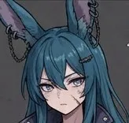
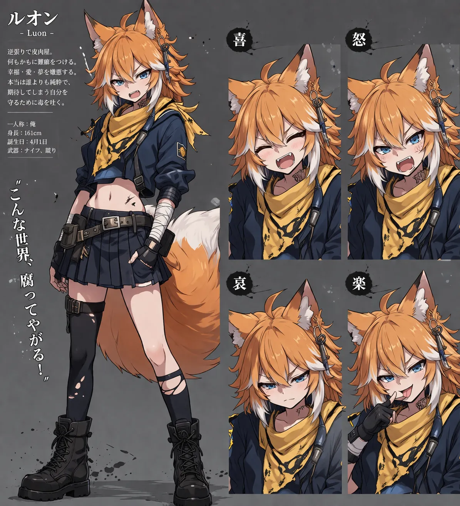
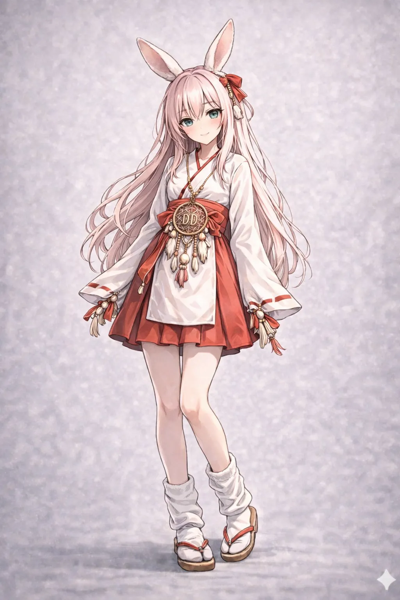
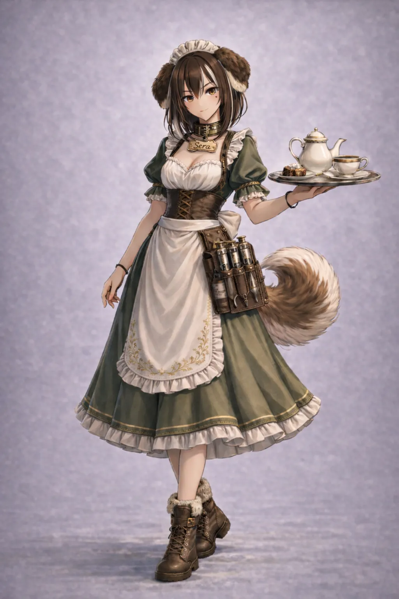
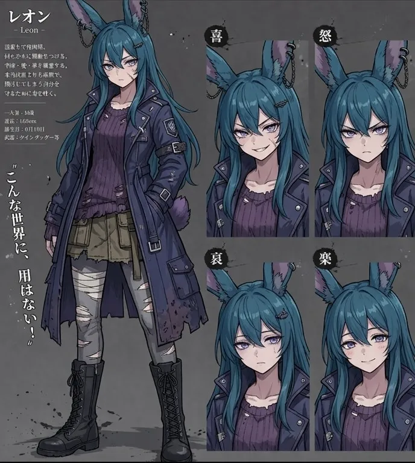

逆張りで皮肉屋。幸福・愛・夢を嫌悪するが、本当は誰よりも純粋。
「こんな世界、腐ってやがる！」

すべてを肯定する少女。ポジティブすぎて周りがみえないことも。
「生きてるだけで、大正解だよ♪」

クールで知的なメイド。露出の高い服をなんとも思ってない様子。
「心なんてどうでもいいじゃないですか」

コレステロールの妹。弱きを助け、強きをくじく。実は寂しがり屋。
「こんな世界に、用はない！」